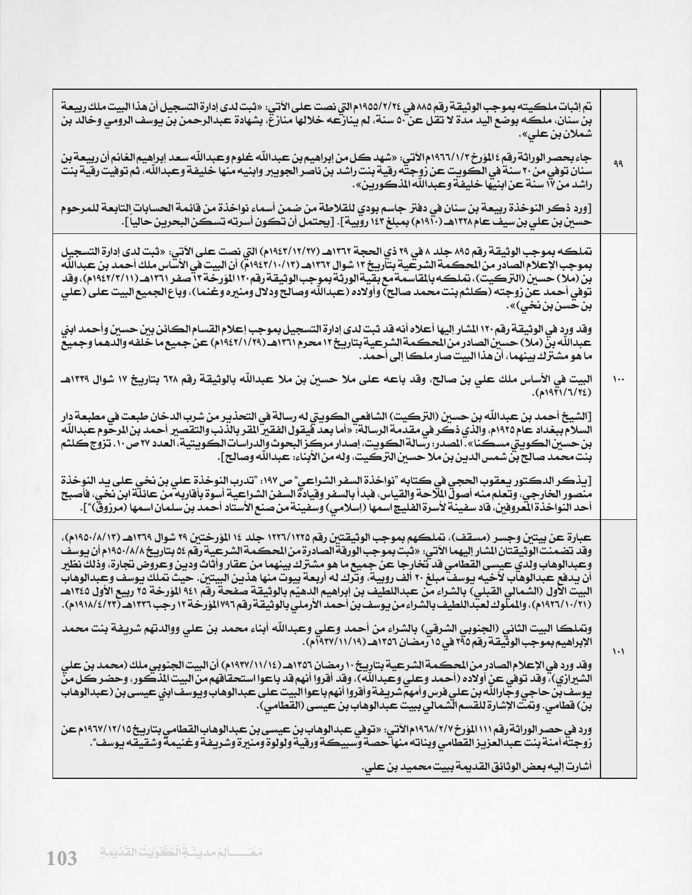
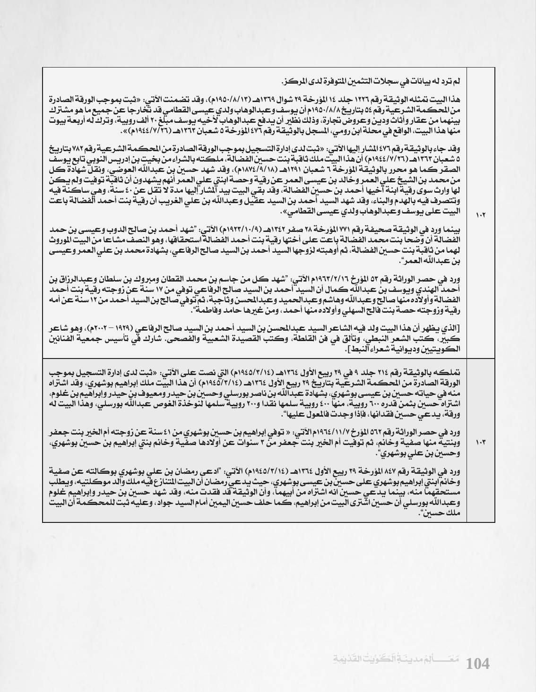
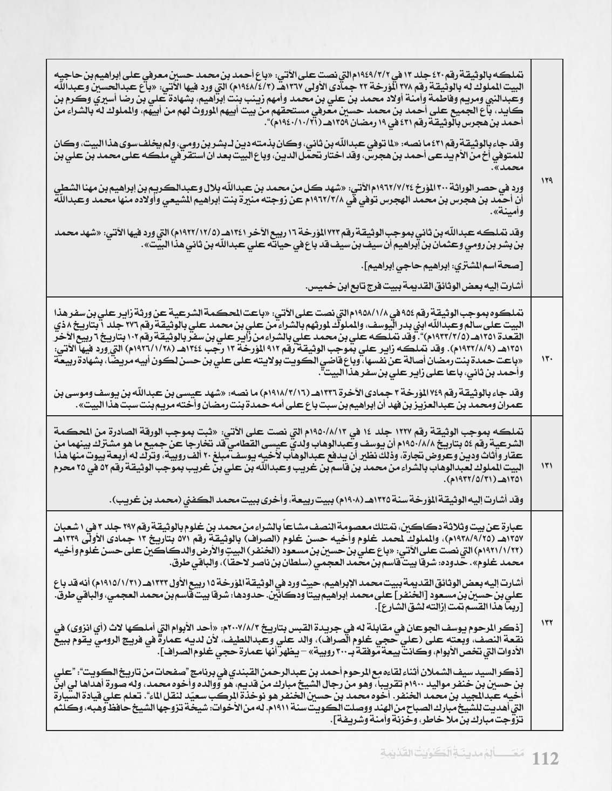

Under a court paper of 8 August 1950, Yousef and Abdulwahab, sons of Eissa Al-Qatami, settled everything they had owned together: property, furniture, debts and trade goods. Abdulwahab paid his brother Yousef 20,000 rupees, and Yousef left him four houses. Deeds 1225, 1226 and 1227 then recorded the houses in Fereej Ibn Rumi. They included two houses joined by a covered passage, one bought in 1926 from Abdullatif bin Ibrahim Al-Duhaim and one bought in 1937 from the sons of Mohammed bin Ali Al-Shirazi, and a house the brothers bought in 1944 from Rugaya bint Ahmad Al-Fadhala.
Why it matters
It is the moment Eissa's two sons split the family business and property more than twenty years after their father died, and it shows how much they had built together.
Who is meant
Yousef and Abdulwahab, sons of Eissa Al-Qatami, are both in our tree, and the same court paper is quoted for every one of these houses.
Page copies

Ma'alim part 7, page 103, plot 101

Ma'alim part 7, page 104, plot 102

Ma'alim part 7, page 112, plot 131
Original text
الوثيقتان رقم ١٢٢٥ و١٢٢٦ جلد ١٤ المؤرختان ٢٩ شوال ١٣٦٩هـ (١٩٥٠/٨/١٣م): «ثبت بموجب الورقة الصادرة من المحكمة الشرعية رقم ٥٤ بتاريخ ١٩٥٠/٨/٨م أن يوسف وعبدالوهاب ولدي عيسى القطامي قد تخارجا عن جميع ما هو مشترك بينهما من عقار وأثاث ودين وعروض تجارة، وذلك نظير أن يدفع عبدالوهاب لأخيه يوسف مبلغ ٢٠ ألف روبية، وترك له أربعة بيوت منها هذين البيتين».
حيث تملك يوسف وعبدالوهاب البيت الأول (الشمالي القبلي) بالشراء من عبداللطيف بن إبراهيم الدهيم بالوثيقة رقم ٩٤١ المؤرخة ٢٥ ربيع الأول ١٣٤٥هـ (١٩٢٦/١٠/٢١م)، وتملكا البيت الثاني (الجنوبي الشرقي) بالشراء من أحمد وعلي وعبدالله أبناء محمد بن علي ووالدتهم شريفة بنت محمد الإبراهيم بموجب الوثيقة رقم ٢٩٥ في ١٥ رمضان ١٣٥٦هـ (١٩٣٧/١١/١٩م).
الوثيقة رقم ٤٧٦ المؤرخة ٥ شعبان ١٣٦٣هـ (١٩٤٤/٧/٢٦م): «...وقد شهد السيد أحمد بن السيد عقيل وعبدالله بن علي الغريب أن رقية بنت أحمد الفضالة باعت البيت على يوسف وعبدالوهاب ولدي عيسى القطامي».
English translation
Documents 1225 and 1226, volume 14, dated 29 Shawwal 1369 (13 August 1950): "It is established by court paper number 54 of the Sharia Court, dated 8 August 1950, that Yousef and Abdulwahab, sons of Eissa Al-Qatami, have settled with each other over everything they owned in common, whether property, furniture, debts or trade goods, in return for Abdulwahab paying his brother Yousef the sum of 20,000 rupees, and Yousef has left him four houses, among them these two houses."
Yousef and Abdulwahab had bought the first house (north west) from Abdullatif bin Ibrahim Al-Duhaim by document 941 of 25 Rabi Al-Awwal 1345 (21 October 1926), and the second house (south east) from Ahmad, Ali and Abdullah, sons of Mohammed bin Ali, and their mother Sharifa bint Mohammed Al-Ibrahim, by document 295 of 15 Ramadan 1356 (19 November 1937).
Document 476, dated 5 Shaban 1363 (26 July 1944): "...Al-Sayed Ahmad bin Al-Sayed Aqeel and Abdullah bin Ali Al-Ghareeb testified that Rugaya bint Ahmad Al-Fadhala sold the house to Yousef and Abdulwahab, sons of Eissa Al-Qatami."
Notes
Ma'alim part 7, book pages 103 and 104 (plots 101 and 102), and page 112 (plot 131, deed 1227). The book quotes the Registration Department records; we have not seen the original deeds themselves.
Others named
Abdullatif bin Ibrahim Al-DuhaimAhmad, Ali and Abdullah, sons of Mohammed bin Ali Al-ShiraziSharifa bint Mohammed Al-IbrahimRugaya bint Ahmad Al-Fadhala
Sources
Ma'alim Madinat Al-Kuwait Al-Qadima (Landmarks of Old Kuwait Town), Center for Research and Kuwaiti Studies, 2024, part 7, pages 103, 104 and 112. A copy is saved in the family Drive.
Archive reference
Ma'alim part 7, pp. 103, 104, 112 · الوثائق ١٢٢٥ و١٢٢٦ و١٢٢٧ و٤٧٦
How this text was made: Arabic text as quoted in Ma'alim Madinat Al-Kuwait Al-Qadima. English translation by Claude; please review.